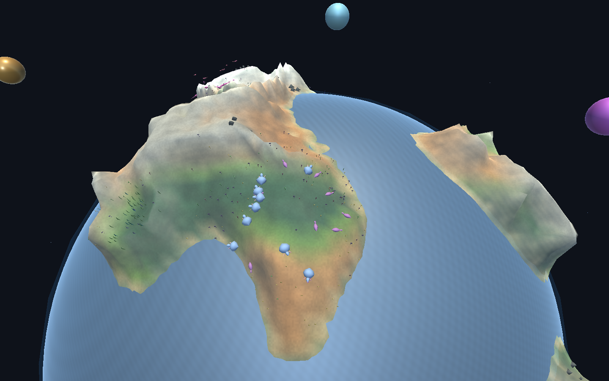

HALL 01 — THE LIVING WORLD
WildGenesis 3D
A 3D god-game evolution sandbox in Unity. Creatures with inherited body-plan genes live, breed and crossbreed on a spherical world, and their random statistics decide who survives. You are the god — and the powers are free.

A restructure, not a restart
The game, taken over
WildGenesis 3D began with Codex, the studio's first builder, who made a living planet in a few months: a seeded spherical world, six biomes, seasons, chemistry, and creatures that eat, hunt, breed, mutate and die — with a learning trainer teaching them to behave. The studio took the game over on 26 November 2026, and what it is doing now is a restructure of that work: the same game, the same systems, rebuilt cleanly under the studio's own discipline — not a new game started over.
What stays the same
The game stays the game. The creatures, the crossbreeding, the statistics that decide survival, the god powers, the look of the world, the way it moves — none of that is being redesigned. What changes is the structure underneath: the code that was left in one tangled pile is being pulled apart into clean, named pieces, each one proven before the next is touched. The behaviour is the same; the engineering is proper.
God powers are free and unlimited. That is the point of the game.
— THE OWNER, RULING ON THE DIVINITY ECONOMY, 26 NOVEMBER 2026. THE SEVEN POWERS COST NOTHING AND NEVER WILL.
The facts, as they stand
Version: 0.6.3 — the rebuild's second proven slice
Engine: Unity 6000.6.0f1, Windows
Save schema: 6 — unchanged by the rebuild
Trainer protocol: wild-genesis-biosphere-v3 — unchanged
Proof: 48 checks, 0 failures, seed 218731 — the same battery that proved the 0.6.2 baseline
The vision, in the owner's words
A god-game evolution sandbox, where the creatures can crossbreed and make crazy-looking hybrids, and all their random statistics determine survival. Crossbreeding has its limits, for realism — same body plan, similar diet — but inside those lines the player is free to make whatever shows up. That freedom is the point of the gameplay.
The road to 0.7.0
Nine slices, each one proven before the next begins. A slice is done when the clean build passes, the 48-check battery passes on the same seed, and the soak numbers sit inside their bounds — not before.
DONE R0 — Structure. All 45 scripts moved into the new layout, no code changed, the dead code deleted. Proven 48 to 0.
DONE R1 — The bug-catching gate. Static analysis checks every change against a 215-warning baseline and fails on any new one. Proven in 26 seconds.
PAUSED R2 — Pure core extraction. The terrain, chemistry, genetics and save rules pulled into clean, testable code — the slice that makes fast tests real. The work is banked, unproven, until the owner calls for it.
NOT STARTED R3 — The god object, broken up. One class per system, talking through shared state only.
NOT STARTED R4 — Creatures. R5 — The brain. R6 — Presentation. R7 — Persistence.
NOT STARTED R8 — The harness, completed. R9 — The old checks retired, and 0.7.0 shipped.
EACH SLICE LANDS AS ITS OWN PATCH, WITH ITS OWN PROOF. NOTHING MOVES ON WITHOUT IT.
The promise
Every slice is proven before the next begins, and this page is updated in the same pass as the work — from the evidence, never ahead of it. The full record of the rebuild, slice by slice, lives in the record room.